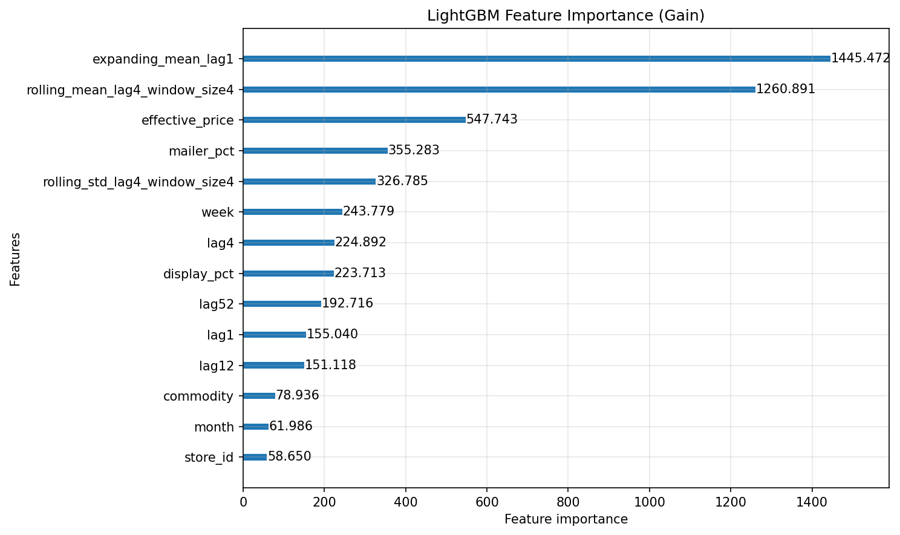
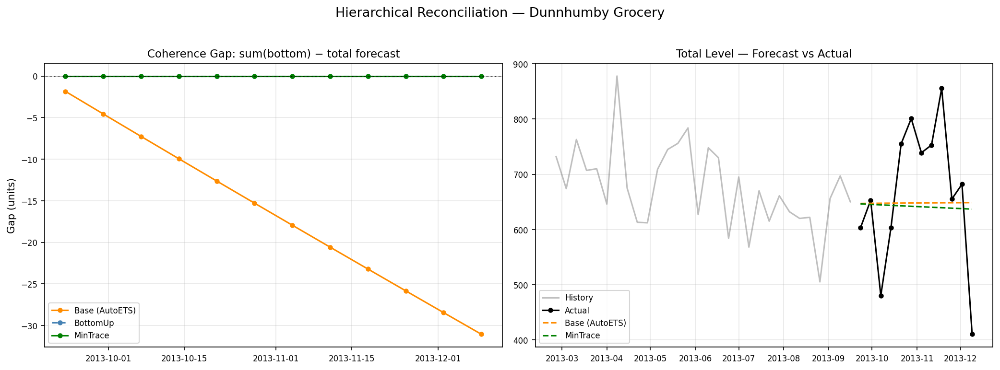
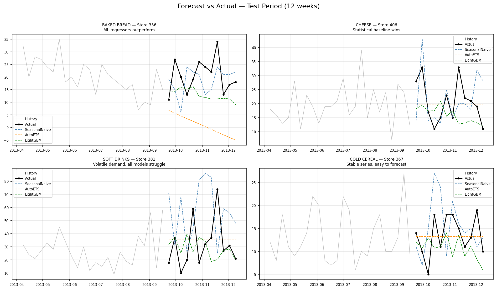
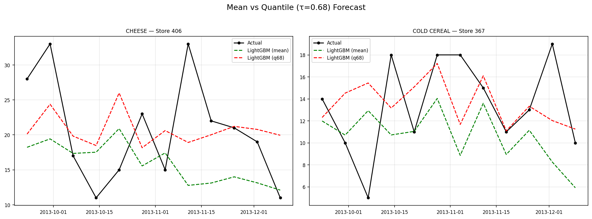

5.3 Demand Forecasting
What Is Demand Forecasting?
In retail and manufacturing, demand forecasts drive real decisions. The forecast number sets the production plan, the marketing budget, the staffing schedule, and the order quantities. When it misses, the impact is immediate: too much inventory or empty shelves, wasted ad spend or missed growth.
For retailers, under-forecasting means stockouts and lost customers; over-forecasting means excess inventory and markdowns. For brands and manufacturers, the forecast also locks in raw material orders, factory schedules, and logistics: overshoot and you write off inventory, undershoot and you lose shelf space at retailers. In both cases, forecast error flows straight to the P&L.
The challenge is that every department sees the forecast differently. Sales pushes the number up to avoid missing targets; supply chain biases it down to avoid excess inventory. Even with a single forecast, each team runs its own version, and planning coherence breaks down.
Typical Approach
The standard toolkit for demand forecasting (ARIMA, Exponential Smoothing (ETS), Prophet) has a common structure: fit one model to one series, produce a point forecast, and check the error rate (usually MAPE) against a threshold (e.g. 10%). If the number looks reasonable, the job is done. This single-model, single-series workflow is where many organizations stop.
Three Limitations of the Typical Approach
This single-model workflow runs into the same problems again and again. Three specific limitations motivate the modern approach that follows.
Too many methods, no systematic way to choose. ARIMA, ETS, Prophet, LightGBM, Theta: the list of available methods and libraries keeps growing, but there is no universal winner. AutoETS might be best for one dataset, ARIMA for another, and what works in benchmarks can fall flat on your actual SKU mix. Without a structured comparison framework, most teams just stick with whatever someone set up first.
Granularity mismatch. When you add up SKU-by-store forecasts, the total often doesn’t match the category-level forecast. Marketing looks at the overall brand number, operations looks at the granular weekly forecast, and the two don’t line up. This is not a model failure; it is a structural consequence of forecasting each level independently.
Upside and downside risks are not symmetric. MAPE treats over-forecasting and under-forecasting the same way. But in practice, the business cost of each direction is different. For a retailer where stockouts mean lost sales and customers defecting to competitors, under-forecasting is far more expensive than holding a bit of extra inventory. On the other hand, a cash-flow-constrained manufacturer may prefer to under-forecast rather than tie up capital in unsold goods. The point is that the cost ratio depends on the business context, but symmetric metrics like MAPE ignore this entirely.
Modern Approach: Three Pillars
To address these three limitations, this chapter centers on three mechanisms: FVA, Cost-Weighted Evaluation, and Hierarchical Reconciliation. Together, they transform demand forecasting from “producing a number” into a decision-making tool connected to business value.
Forecast Value Added (FVA)
FVA asks a simple question: “Did adding this method actually improve the forecast?”
Start with the simplest baseline, Naive (just repeat the last value). Then line up every candidate method against Naive and keep only those that reduce cost. This is a structured comparison: any method that does not beat Naive on a cost basis is dropped, regardless of its sophistication.
Cost-Weighted Evaluation
Instead of MAPE, set the cost of stockouts and excess inventory separately, and evaluate forecasts based on actual business cost:
\[\text{Cost-Weighted Loss} = \begin{cases} c_u \times |e| & \text{if } y_{\text{actual}} > y_{\text{pred}} \quad \text{(under-forecast → stockout)} \\ c_o \times |e| & \text{if } y_{\text{actual}} < y_{\text{pred}} \quad \text{(over-forecast → excess)} \end{cases}\]
For example, if the per-unit cost of stockout is $65 and excess inventory is $30, the optimal forecast should target a quantile above the median:
\[\tau^* = \frac{c_u}{c_u + c_o} = \frac{65}{65 + 30} \approx 0.68\]
This tells you to target the 68th percentile (forecasting a bit high) to minimize total cost. Symmetric metrics like MAPE can’t surface this business-optimal solution. In the implementation section, we target this directly using LightGBM’s quantile regression objective.
Hierarchical Reconciliation
Hierarchical reconciliation mathematically aligns forecasts across all levels, so the numbers always add up. For retailers, the sum of commodity × store forecasts matches the category total exactly. For manufacturers, account-level shipment forecasts line up with the brand-level plan. The debate over which number to believe goes away.
Total (1 series)
├── SOFT DRINKS → Store 292, 356, 367, 381, 406 (5)
├── FLUID MILK PRODUCTS → Store 292, 356, 367, 381, 406 (5)
├── BAKED BREAD/BUNS/ROLLS → Store 292, 356, 367, 381, 406 (5)
├── CHEESE → Store 292, 356, 367, 381, 406 (5)
├── BAG SNACKS → Store 292, 356, 367, 381, 406 (5)
├── YOGURT → Store 292, 356, 367, 381, 406 (5)
└── COLD CEREAL → Store 292, 356, 367, 381, 406 (5)
Bottom level: 35 series | Total nodes: 43Two representative methods: BottomUp aggregates forecasts from the most granular level upward: simple, but noise at the bottom flows straight to the top. MinTrace combines forecasts from all levels using the error covariance matrix, often improving accuracy across the board, though the improvement depends on the quality of the estimated covariance.
The summing matrix \(S\) encodes the hierarchy. If the bottom-level forecast vector is \(\hat{b}\), the bottom-up forecast for all levels is simply \(S \hat{b}\).
Implementation
Now we implement the three pillars as a single pipeline. The input is a weekly sales history: one row per product-store-week combination, with columns for the series identifier (unique_id), date (ds), units sold (y), and any known future regressors like price or promotion flags. The output is a forecast for each series over the planning horizon (here, 12 weeks), evaluated not just on statistical accuracy but on business cost, and reconciled so that granular forecasts add up to the totals.
The pipeline has four steps. First, we fit a set of simple statistical baselines (Naive, SeasonalNaive, AutoETS, etc.) to establish the accuracy floor. Second, we add a LightGBM model that incorporates causal features like price and promotions, which the univariate baselines in Step 1 do not use. Third, we apply hierarchical reconciliation so that bottom-level forecasts are coherent with category totals. Fourth, we line everything up in an FVA table to see which steps actually added value.
The implementation uses Nixtla, an open-source forecasting ecosystem with three libraries: statsforecast for statistical baselines, mlforecast for ML models with regressors, and hierarchicalforecast for reconciliation. All share a common data format (unique_id / ds / y), making it straightforward to pass data between steps. A data-preparation companion script and one runnable companion notebook apply this pipeline to real Dunnhumby grocery panel data (7 commodity categories × 5 stores, 35 bottom-level series, 102 weeks of household panel purchases, a proxy for store-level demand, not total store sales): 01_eda.py builds the weekly panel, and sec5.3_demand_forecasting.ipynb runs the full pipeline: modeling, evaluation, and hierarchical reconciliation.
Companion code: two files reproduce the pipeline:
01_eda.py: data preparation and EDA (a companion script; requires the raw Dunnhumby CSVs and produces the committeddunnhumby_grocery_weekly.parquet). View on GitHubsec5.3_demand_forecasting.ipynb: modeling, evaluation, and hierarchical reconciliation. View on GitHub · Open in Colab
Step 1: Statistical Baselines (Naive → AutoETS)
Following the FVA framework, start from the simplest model and add complexity one step at a time.
from statsforecast import StatsForecast
from statsforecast.models import (
Naive, SeasonalNaive, AutoETS, AutoARIMA, AutoTheta,
)
models_stat = [
Naive(),
SeasonalNaive(season_length=52),
AutoETS(season_length=52),
AutoARIMA(season_length=52),
AutoTheta(season_length=52),
]
sf = StatsForecast(
models=models_stat,
freq='W-MON',
n_jobs=-1, # parallel across series
)
sf.fit(df_train[['unique_id', 'ds', 'y']])
fcst_stat = sf.predict(h=horizon)For the Dunnhumby data, the 35 bottom-level series are each combination of commodity category (7 categories like Soft Drinks, Cheese, Cold Cereal) and store (5 stores). Each of the 5 statistical models is fit independently to each of these 35 series, producing 175 model fits in total. The companion notebook adds two intermittent demand specialists (CrostonOptimized and IMAPA) since some series have zero-sales weeks, and uses ConformalIntervals to produce 80% and 95% prediction intervals around the statistical baselines. The FVA table in Step 4 also includes the LightGBM models from Step 2.
Step 2: ML (LightGBM + Causal Regressors)
The statistical baselines in Step 1 are univariate: they use only past sales to predict the future. (Statistical models can accept exogenous regressors, e.g. ARIMAX, but the baselines here intentionally do not, to keep the FVA comparison clean.) Gradient Boosted Trees, like LightGBM, treat forecasting as a tabular regression problem and naturally accommodate additional features: price, promotions, calendar effects, and cross-series patterns like learning that a price cut at Store A should behave similarly to one at Store B.
In the Dunnhumby grocery data, three regressors are available as known future inputs: effective_price (average price per unit), display_pct (fraction of products on in-store display), and mailer_pct (fraction featured in mailer/flyer). These are planned inputs (promo calendars are set 4–8 weeks ahead and price changes are scheduled), so using them is not leakage. (The general rule: any feature you use must be available at the time you produce the forecast. If it won’t be, you have leakage, and your backtest will look great while production fails.)
The LightGBM model uses lags (1, 4, 12, 52 weeks), rolling statistics (4-week mean and standard deviation), calendar features (month, week-of-year), and the three causal regressors. The regressors are what make this step worth adding to the pipeline: they let the model learn the demand–price and demand–promotion relationships directly, rather than treating promo-driven spikes as unexplained noise.
Feature importance confirms what the model learned. In the Dunnhumby data, all three causal regressors appear in the top features by gain: effective_price (3rd), mailer_pct (4th), and display_pct (8th). Price and mailer activity carry the strongest promotional signal here, while in-store display varies less across these series and ranks lower. The takeaway is simple: always check whether your regressors actually vary in the training data before assuming they will help.

Step 3: Hierarchical Reconciliation (MinTrace)
The hierarchicalforecast library uses tags (dictionaries that map each aggregation level to its bottom-level series) to define the hierarchy. For the Dunnhumby data, the hierarchy is three levels: Total (1) → Commodity (7 categories) → Commodity × Store (35 bottom-level series).
The workflow is: generate base forecasts at all levels with AutoETS, then apply reconciliation using BottomUp and MinTrace. MinTrace estimates the error covariance from fitted residuals, not from the raw training data. The reconciled forecasts are guaranteed to be coherent: the sum of commodity × store forecasts exactly equals the category total. If the assortment rationalization in Section 5.2 removes a product, the summing matrix must be updated and reconciliation re-run. See the companion notebook sec5.3_demand_forecasting.ipynb for the full implementation.

Step 4: FVA Table, Comparing All Stages
Now line up every step in the FVA table and verify the marginal contribution of each stage.
Every standard metric has its limits. MAPE blows up when actuals are near zero. RMSE penalizes big misses more. MASE scales each series’ forecast error by its own in-sample naive error, making it dimensionless and comparable across series of different scales. It’s usually the safest default for accuracy. But as argued above, symmetric metrics alone aren’t enough; always include cost-weighted loss for the business-focused comparison.
| Model | MASE | Cost-Weighted Loss | FVA vs Naive (CWL) |
|---|---|---|---|
| Naive | 0.99 | 428 | (baseline) |
| SeasonalNaive | 1.16 | 446 | -4.2% |
| AutoETS | 0.84 | 367 | +14.3% |
| AutoARIMA | 0.77 | 326 | +23.9% |
| AutoTheta | 0.77 | 313 | +27.0% |
| CrostonOptimized | 0.77 | 331 | +22.8% |
| IMAPA | 0.77 | 332 | +22.5% |
| LightGBM | 0.78 | 367 | +14.3% |
| LightGBM (q=0.68) | 0.77 | 316 | +26.2% |

Note that raw statistical forecasts can go negative (visible in the top-left panel); in production, the guardrails described in “From Forecast to Action” clip forecasts to zero.
The key finding is what I call the Accuracy Trap: LightGBM (mean) all but matches the best statistical models on MASE (0.78, versus 0.77 for AutoARIMA / AutoTheta / CrostonOptimized / IMAPA), yet its cost-weighted loss (367) is 18% worse than AutoTheta (313). Two things hold the mean model back. A symmetric objective aims at the center of the distribution, while the 65/30 cost ratio asks for the 0.68 quantile; and the log-transform round trip biases its forecasts low to begin with, the worst direction when underforecasting is the expensive mistake. The statistical models forecast in original units and escape the second problem, which is why AutoTheta lands at 313 despite also being symmetric. Switching the same LightGBM to a quantile objective fixes both at once (next section). This is exactly why cost-weighted evaluation matters; the ranking depends on the assumed cost ratio (\(c_u\)/\(c_o\)), and a different ratio will shift the optimal method.
The fix is quantile regression. Recall that the business-optimal target is the 68th percentile (τ* = 0.68). LightGBM can target this directly by setting objective='quantile' with alpha=0.68. The result: the quantile model forecasts about 18% higher on average than the mean model, and its cost-weighted loss drops from 367 to 316, nearly matching the best statistical model (AutoTheta at 313) while maintaining the interpretability of ML feature importance.

Other findings: seven of eight models improve on Naive by both MASE and CWL. SeasonalNaive is the only model with negative FVA: the data does not have strong enough year-over-year patterns at this aggregation level.
Hierarchical reconciliation does not appear in this table because its primary target is coherence (making the numbers add up across levels), not point-forecast accuracy at the bottom level. The sec5.3_demand_forecasting.ipynb notebook evaluates reconciliation separately and confirms that MinTrace-reconciled forecasts are perfectly coherent while maintaining bottom-level accuracy comparable to the base forecasts.
In practice, model selection follows a clear decision tree: if you care only about point accuracy, the statistical baselines are already strong. If you care about operating cost, quantile regression (LightGBM q=0.68) or AutoTheta is better. If you need cross-level consistency for planning, reconcile after model selection.
From Forecast to Action
A forecast that sits in a notebook is not useful. The final step is connecting the number to real decisions, and making sure it stays reliable over time.
In most organizations, the forecast feeds a recommendation (order this many units, staff this many hours), and a human approves or overrides it. This middle ground (automated recommendation, human sign-off) gets most of the efficiency while keeping judgment in the loop for edge cases. Critically, every override should be tracked and evaluated through FVA, the same way model changes are.
Once the forecast is in production, monitor two things: rolling error and bias direction. Track the 8-week moving average of absolute errors and alert if it exceeds twice the historical standard deviation. If 7 out of 8 weeks are off in the same direction, the model has drifted. For gradual drift, shorten the training window. For sudden breaks (a new competitor, a supply disruption), add a regime indicator feature and retrain.
The model predicts demand, but actions (order quantities, staffing, budgets) need business constraints. Apply these as post-processing: clip negative forecasts to zero, cap at warehouse capacity, and round to the minimum order size.
If past stockouts are not flagged, the model learns that demand drops to zero during those weeks, and perpetuates under-ordering. Stockout correction must happen before the data reaches the model: identify stockout periods (zero sales + zero inventory), replace with NaN, and impute using forward-fill or rolling average from non-stockout periods. Inventory caps and minimum order quantities are post-processing steps applied after the forecast.
Key Takeaways
Demand forecasting directly drives actions. The forecast number sets order quantities, staffing, and budgets. Errors show up right away as excess inventory or empty shelves.
Upside and downside risks are not the same. Cost-weighted evaluation, which sets stockout and overstock costs separately, ties forecast accuracy to real business value.
Hierarchical reconciliation is essential for credibility. When granular and aggregate forecasts don’t match, neither is trusted. Mathematical reconciliation removes the debate.
FVA (Forecast Value Added) is the accountability check. Every step, including human overrides, should show positive FVA or be dropped.
Promotional patterns (baseline, uplift, and the post-promo dip) are key inputs to the ML model’s causal regressors. Price elasticity from Section 5.1 and the effective_price feature here estimate the same underlying demand–price relationship; use price elasticity analysis for pricing strategy, this chapter for operational forecasting. When the assortment work in Section 5.2 removes a product, update the hierarchy’s summing matrix.